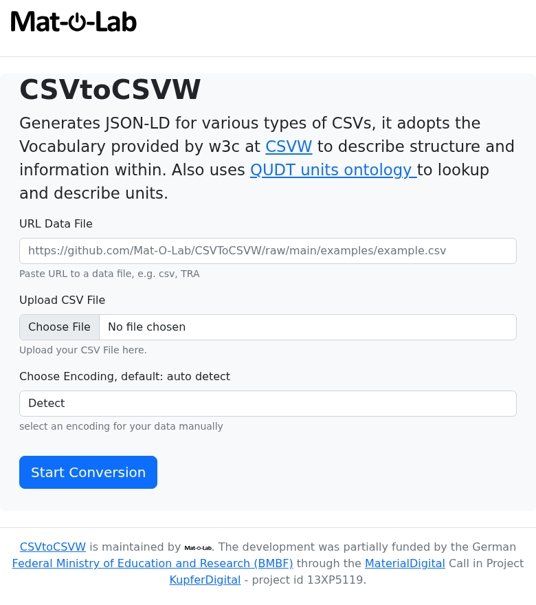
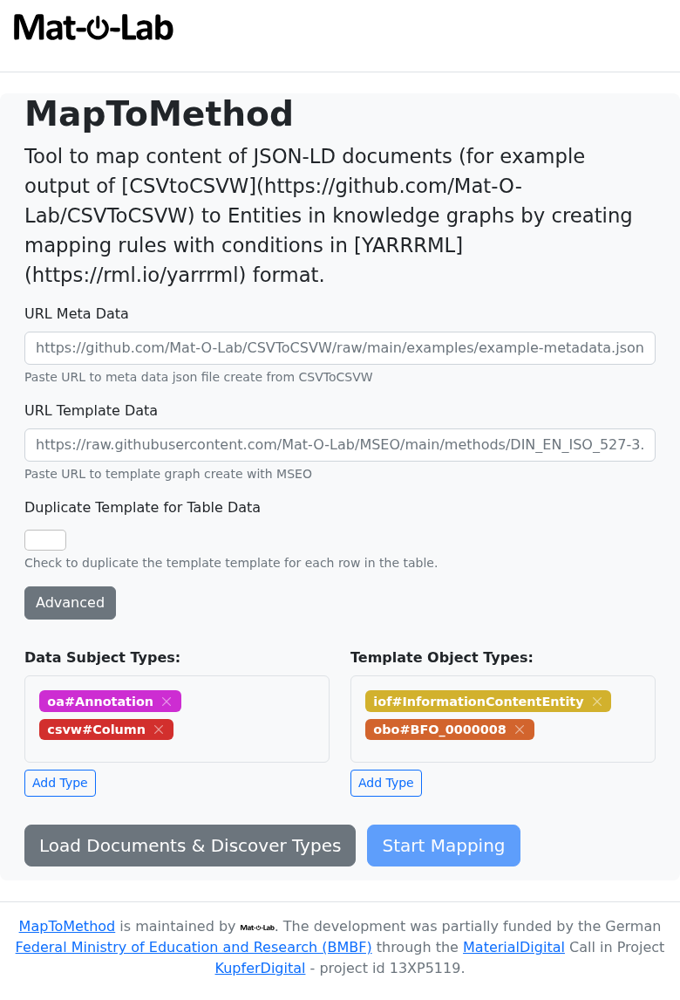
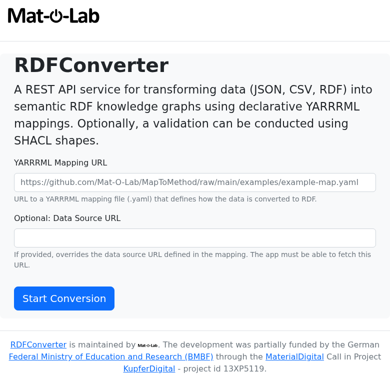

Use the Data Tools Directly¶
Upload your CSV. Get FAIR-compliant data back. No CKAN account required.
The Mat-O-Lab data tools run as public web services. You can submit a CSV file — say, a tensile test table from your lab — and receive a structured, machine-readable output within seconds. This guide walks you through each tool and a complete worked example using real steel measurement data.
What you need before you start¶
- Your CSV file, or a public link to it (e.g. a GitHub raw URL or a direct download link from your lab system)
- A mapping file (.yaml) — either one your data curator has prepared for you, or one generated by MapToMethod (see below)
No installation. No account. No command-line knowledge needed.
The three tools¶
| Tool | What it does | Web UI | API explorer |
|---|---|---|---|
| CSVToCSVW | Reads your CSV and adds structured column descriptions | csvtocsvw.matolab.org | /api/docs |
| MapToMethod | Generates the mapping file that links your columns to standard concepts | maptomethod.matolab.org | /api/docs |
| RDFConverter | Applies the mapping and produces FAIR-compliant output | rdfconverter.matolab.org | /api/docs |
Run them in order — CSVToCSVW first, RDFConverter last. MapToMethod is needed only when setting up a new measurement type.
Step 1 — Annotate your CSV (CSVToCSVW)¶
Go to csvtocsvw.matolab.org.

You will see a form with a field labelled URL Data File.
Paste the URL of your CSV file into that field, then click Execute.
The service reads your CSV columns (names, units, separators) and returns an annotated description file in JSON-LD format — a standard way of attaching meaning to your data. Save this file; you will need it in Step 3.
Worked example — INSTRON tensile test data
This real CSV from the IOFMaterialsTutorial repository contains three columns: Zeit [s], Maschine [mm], and Kraft [kN] — time, displacement, and force from a steel tensile test.
Try it yourself: paste this URL into the data_url field on the CSVToCSVW form:
Click Execute. The annotated file downloads or appears on screen. This is your CSVW file — a structured description of the columns and their units, ready for the next step.
If your CSV is not publicly accessible on the internet (e.g. it lives only on your computer or your institute's internal server):
On the same CSVToCSVW page, look for the annotate_upload form. Use the file upload field to select your local CSV directly, then click Execute. The result is identical; the service processes the file and returns the annotated description without storing your data.
Step 2 — Explore column types (MapToMethod)¶
When to use this step
This step is used when setting up a new type of measurement — to understand what standard concepts your columns correspond to. If your data curator has already prepared a mapping file for your measurement type, you can skip to Step 3.
Go to maptomethod.matolab.org.

The types form shows you which categories of scientific concepts appear in your annotated file. The entities form lists your individual columns with their internal names — the identifiers you will need when building a mapping.
To explore the IOFMaterialsTutorial CSVW, paste this URL into the url field on the /api/types form:
Click Execute. The result lists the kinds of things the service found: measurement columns, unit annotations, grouping information.
To generate a mapping automatically, use the mapping form. Provide the CSVW URL, a template file URL (ask your data curator for the right one), and a list of which columns correspond to which template slots. The form returns a mapping file (.yaml) you can save and use in Step 3.
See Author a Mapping for a full walkthrough of building the mapping from scratch.
Step 3 — Convert to FAIR data (RDFConverter)¶
Go to rdfconverter.matolab.org.

First, validate your mapping (recommended):
Use the checkmapping form. Paste the URL of your CSVW file and the URL of your mapping file into the two fields, then click Execute.
The result shows two numbers:
rules_applicable— how many mapping rules matched your datarules_skipped— how many rules were skipped because they did not match
If rules_skipped is 0, everything matched. If it is greater than 0, check Author a Mapping — Troubleshooting before continuing.
Then, produce the output:
Use the createrdf form. Paste the mapping URL and choose turtle as the return type, then click Execute.
Try an existing mapping on your own data
The Optional: Data Source URL field lets you override the data URL that is hardcoded inside the mapping file. This means you can take any published mapping (e.g. from the real datasets table below), point it at your own similarly-formatted CSVW, and test whether the mapping works for your data — without modifying the mapping file at all. Leave the field empty to use the data URL embedded in the mapping.
This is also exactly how the CKAN integration works. For CSV uploads, CKAN generates the CSVW and then calls RDFConverter with the mapping URL and the CSVW URL as the data source override. For Catena-X JSON payloads, CKAN passes the actual JSON file URL as the override — this is what lets a single SAMM mapping file apply to every incoming payload and automatically identify which SAMM aspect model it belongs to.
The service applies the mapping and returns a .ttl file — a FAIR knowledge graph. This file contains your measurement data enriched with standardised scientific concepts, ready for sharing, archiving, or querying.
Worked example — IOFMaterialsTutorial steel measurements
| Field | Value |
|---|---|
| Mapping URL | https://raw.githubusercontent.com/Mat-O-Lab/IOFMaterialsTutorial/main/measurements-map.yaml |
| Data URL (CSVW) | https://raw.githubusercontent.com/Mat-O-Lab/IOFMaterialsTutorial/main/measurements-metadata.json |
Paste these into the checkmapping form and click Execute. You should see rules_applicable: 1, rules_skipped: 0. Then use the same URLs in the createrdf form to download the finished knowledge graph.
Real datasets to explore¶
These are complete, published examples you can use immediately in any of the forms above:
| Dataset | CSV file | Mapping | FAIR output |
|---|---|---|---|
| IOFMaterialsTutorial — steel length measurements | measurements.csv | measurements-map.yaml | measurements-joined.ttl |
| BAMresearch DF-TEM-PAW — particle detection runs | detection_runs.csv | detection_runs-map.yaml | detection_runs-joined.ttl |
For developers and scripted pipelines¶
The web forms above call the same HTTP API endpoints that can be called from scripts or CI/CD pipelines. If you are comfortable with command-line tools, the sections below show how to run the same steps using curl.
CSVToCSVW — annotate from URL¶
curl -X POST "https://csvtocsvw.matolab.org/api/annotate?return_type=json-ld" \
-H "Content-Type: application/json" \
-d '{"data_url": "https://github.com/Mat-O-Lab/CSVToCSVW/raw/main/examples/example2.csv",
"encoding": "auto"}' \
--output example2-metadata.json
For private (local) files, use the upload endpoint:
curl -X POST "https://csvtocsvw.matolab.org/api/annotate_upload?return_type=json-ld" \
-F "file=@/path/to/local/sample.csv" \
--output sample.csvw.json
MapToMethod — explore types and generate a mapping¶
curl "https://maptomethod.matolab.org/api/types?url=https://raw.githubusercontent.com/Mat-O-Lab/IOFMaterialsTutorial/main/measurements-metadata.json"
["http://qudt.org/schema/qudt/DerivedUnit", "http://www.w3.org/ns/csvw#Column",
"http://www.w3.org/ns/csvw#TableGroup", "http://www.w3.org/ns/prov#Activity",
"http://www.w3.org/ns/prov#SoftwareAgent"]
curl -X POST "https://maptomethod.matolab.org/api/mapping" \
-H "Content-Type: application/json" \
-d '{
"data_url": "https://raw.githubusercontent.com/Mat-O-Lab/IOFMaterialsTutorial/main/measurements-metadata.json",
"template_url": "https://github.com/Mat-O-Lab/IOFMaterialsTutorial/raw/main/LengthMeasurement.ttl",
"predicate": "http://purl.obolibrary.org/obo/RO_0010002",
"map": {
"table-1-LengthMm": "https://github.com/Mat-O-Lab/IOFMaterialsTutorial/raw/main/LengthMeasurement.ttl/LengthData"
}
}' \
--output my-mapping.yaml
RDFConverter — validate and convert¶
curl -X POST "https://rdfconverter.matolab.org/api/checkmapping" \
-G \
--data-urlencode "mapping_url=https://raw.githubusercontent.com/Mat-O-Lab/IOFMaterialsTutorial/main/measurements-map.yaml" \
--data-urlencode "data_url=https://raw.githubusercontent.com/Mat-O-Lab/IOFMaterialsTutorial/main/measurements-metadata.json"
curl -X POST "https://rdfconverter.matolab.org/api/createrdf?return_type=turtle" \
-G \
--data-urlencode "mapping_url=https://raw.githubusercontent.com/Mat-O-Lab/IOFMaterialsTutorial/main/measurements-map.yaml" \
--data-urlencode "data_url=https://raw.githubusercontent.com/Mat-O-Lab/IOFMaterialsTutorial/main/measurements-metadata.json"
{
"filename": "measurements-metadata-joined.ttl",
"graph": "@prefix iof: ...\n<.../table-1-LengthMm> ...",
"num_mappings_applied": 1,
"num_mappings_skipped": 0
}
Full pipeline shell script¶
CSV → CSVW → validate → RDF in one script, using real IOFMaterialsTutorial data:
#!/usr/bin/env bash
set -e
CSV_URL="https://raw.githubusercontent.com/Mat-O-Lab/IOFMaterialsTutorial/main/measurements.csv"
MAPPING_URL="https://raw.githubusercontent.com/Mat-O-Lab/IOFMaterialsTutorial/main/measurements-map.yaml"
# Step 1: Annotate CSV → CSVW JSON-LD
curl -s -X POST "https://csvtocsvw.matolab.org/api/annotate?return_type=json-ld" \
-H "Content-Type: application/json" \
-d "{\"data_url\": \"${CSV_URL}\", \"encoding\": \"auto\"}" \
--output measurements-metadata.json
echo "✓ CSVW: measurements-metadata.json"
# Step 2: Validate mapping (dry-run)
CHECK=$(curl -s -X POST "https://rdfconverter.matolab.org/api/checkmapping" \
-G \
--data-urlencode "mapping_url=${MAPPING_URL}" \
--data-urlencode "data_url=https://raw.githubusercontent.com/Mat-O-Lab/IOFMaterialsTutorial/main/measurements-metadata.json")
echo "✓ Check: ${CHECK}"
# Step 3: Apply mapping → joined RDF
curl -s -X POST "https://rdfconverter.matolab.org/api/createrdf?return_type=turtle" \
-G \
--data-urlencode "mapping_url=${MAPPING_URL}" \
--data-urlencode "data_url=https://raw.githubusercontent.com/Mat-O-Lab/IOFMaterialsTutorial/main/measurements-metadata.json" \
--output measurements-joined.ttl
echo "✓ Knowledge graph: measurements-joined.ttl"
Next: Full API Reference — all endpoints with parameters and response schemas.